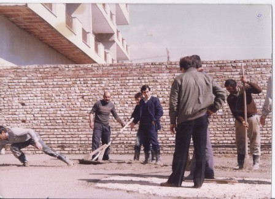

تاریخچه
در سال 1347 تا 1353 آقاي دكتر احمد عليزاده خوئي متخصص بيهوشي كه پزشك وارسته و دانشمند بود با گردهمايي افراد فرهيخته اي چون پروفسور عدل، دكتر حميديه،دكتر مولوي، دكتر خليلي و دكتر شكيبا، زميني به مساحت 3040متر مربع كه در تپّه های عباس آباد واقع شده بود و در حاشيه تهران قرار داشت با نيت ايجاد یك بيمارستان مجهّز خصوصي نمونه خريداري نمودند. با اين هدف ارزنده انساني و اجتماعي و با ايماني راسخ و تصميمي پابرجا، همزمان با رويش گلهاي بهاري اولين كلنگ بيمارستان در روز تولد مولاي متقيان به زمين زده ش
بعد ار آن با گرویدن عده ای دیگر از متخصصان به جمع سهامداران و نیز تغییر مدیریت، هیئت مدیره جدید آقای دکتر سیدعلی میر مظفری را به عنوان مدیر عامل جدید انتخاب کرد. با انتخاب ایشان عملیات ساخت و ساز ادامه یافت و تصمیمات جدیدی اتخاذ گردید. تصمیم به عدم فروش ساختمان و افزایش طبقات از 9 به 12 و افزایش تخت ها از 200 به 300 تخت. پس از تکمیل کارهای ساختمانی سر انجام بیمارستان در شانزدهم فروردین 1379 به بهره برداری رسید و در ساعت 9:30 صبح اولین نوزاد توسط آقای دکتر مجردی متولد گردید. بيمارستان كسري شامل بخش هاي 1- بخش اورژانس 2- بخش مراقبتهاي ويژه قلبي(CCU)3- بخش مراقبتهاي ويژه(ICU- G , ICU-OH) 4- بخش قلب – بخش داخلي- بخش جراحي – بخش اطفال- زنان و زايمان و نوزادان می باشد و ساير بخشها (بخش POST CATH - بخش مراقبتهاي ويژه نوزادان NICU- بخش آنژيوگرافي(كاتتريسم)– بخش مراقبتهاي ويژه كودكان – PICUبخش پزشكي هسته اي – بخش پرتونگاري- بخش سنگ شكن- بخش همودياليز- كلينيك شنوائي سنجي و سمعك- كلينيك ليزر و كاشت مو) در طي چند سال بعد راه اندازي گرديد.
هیئت مدیره جدید در تاریخ 31 خرداد 1382 آقای دکتر ناصر صادقیان را به عنوان مدیر عامل جدید برگزید که اقداماتی نظیر پی گیری اقدامات مربوط به انتقال قطعی زمین مجاور و اخذ اسناد مالکیت مربوطه، اخذ پروانه 750 متر بنا در طرح توسعه بیمارستان و ساخت آن در ضلع جنوبی ساختمان در زمین اصلی بیمارستان و تجهیز و راه اندازی آن و گسترش بیشتر بیممارستان با خرید آپارتمان های همجوار از جمله اقدامات ایشان برای بیمارستان بود. همچنین هیئت مدیره جدید در تاریخ 18/10/1388 تا کنون آقای دکتر قاسم روح الهی را به عنوان مدیرعامل جدید برگزید که در این دوره مدیریت اقدامات جدیدی نظیر خرید دو واحد آپارتمان، تصویب خرید MRI و سی تی اسکن پیشرفته، پی گیری ساخت زمین شرقی، تغییر مکان پست برق و اضافه شدن فضای پست قبلی به فضای اورژانس، احداث و خرید دستگاه امحاء زباله، بازسازی درمانگاه شیمی درمانی، شروع بازسازی کلی بخش ها، طرح تعویض بخش ICU، احداث بخش دیالیز و ICU جدید و بازسازی ساختمان آفرین از جمله اقدامات ایشان می باشد.